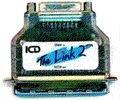

Previous
Next
TOC
The Link

erster Kabeladapter. Kleines zwischensteckerartiges Gerät, benötigt
DMA-Kabel auf der einen und 50pol. SCSI-Buchse (Centronics) auf der
anderen Seite. Steckt direkt auf dem ersten SCSI-Gerät, versorgt
sich über TERMPWR aus dem SCSI-Bus, ist selbst nicht terminiert.
Erzeugt kein Parity-Bit.
The Link II
wie The Link, aber mit Parity-Erzeugung und Anzeigeleuchte für kor-
rekte Spannungsversorgung (an Pin26 (Termpwr) des SCSI-Ports).
Wie man heraus bekommt, ob der Hostadapter das Parity Bit tatsäch-
lich erzeugt geht ganz einfach:
Die Festplatte auf Parity
jumpern (nötigenfalls ein Blick in die
Dokumentation der Festplatte! (wirkt sehr oft wahre Wunder)), wie-
der alles einschalten und staunen wenn das System noch bootet
(dann erzeugt der Hostadapter das Paritybit korrekt).
Die nachrüstung des Paritybits bei Link Adaptern steht auf der
nächsten Seite, im
GE Soft Hostadapterkapitel.
Kapitel Die SCSI Hostadapter der Fa. ICD, Seite 2